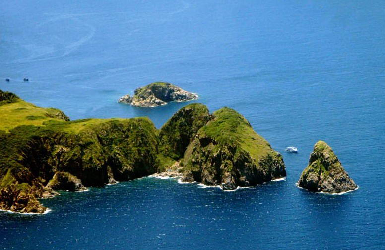

1. Hòn Mun
Gọi là đảo Hòn Mun vì ở phía đông nam của đảo có những mỏm đá nhô cao màu đen tuyền như gỗ mun.
Hòn Mun có tổng diện tích là 160 km2, trong đó 122 km2 là diện tích mặt biển, 38 km2 là tổng diện tích của các hòn đảo. Trong những hang động đá đen của Hòn Mun hàng năm có chim yến về làm tổ.Đảo Hòn Mun được thiên nhiên ưu đã cho một hệ sinh thái biển đa dạng cùng những rặng san hô tuyệt đẹp. Theo thống kê, trên thế giới có khoảng 2.000 loài san hô và sinh vật biển thì ở Hòn Mun đã có tới 1.500, trong đó đã tìm thấy 340 trong tổng số hơn 800 loài san hô cứng trên thế giới. Với độ sâu dưới 18m, thì không còn cảnh đẹp của san hô, nhưng có rất nhiều hang động. Có những hang sâu 10 – 15m, phải dùng đèn để quan sát những sinh vật biển chuyên sống trong bóng tối như tôm, mực, tôm hùm, cá đuối… Quỹ động vật hoang dã thế giới đánh giá đây là khu vực có đa dạng sinh học bậc nhất tại Việt Nam.
Bãi tắm ở Hòn Mun có thể không bằng bãi tắm ở các đảo khác nhưng thế giới đại dương bao quanh đảo rất tuyệt vời. Địa thế của đảo gần với dòng hải lưu nóng từ phía xích đạo đưa tới, rất thích hợp với điều kiện phát triển của rạn san hô và nhiều loại sinh vật biển nhiệt đới về đây quần tụ. Đáy biển vùng Hòn Mun là một tập hợp quần thể sinh vật biển phong phú, đa dạng, là nơi quan sát, nghiên cứu lý thú, bổ ích cho các nhà sinh vật biển nhiệt đới, hải dương học và du khách muốn tìm hiểu vể biển. Phần lớn các tua lặn biển đều đưa du khách đến Hòn Mun. Mỗi năm có khoản 300.000 lượt khách du lịch viếng thăm đảo. Hiện có 5 câu lạc bộ bơi lặn đang hoạt động, phục vụ cho hơn 15.000 khách lặn hàng năm.


Hòn Mun có nhiều hòn đá màu đen tuyền như gỗ mun
2. Hòn Tằm
Hòn Tằm cũng là tên gọi của khu nghỉ dưỡng chuẩn 5 sao tọa lạc trên đảo - đó là Hòn Tằm Resort,
Hòn Tằm (đảo Thủy Kim Sơn) là một đảo rộng hơn 110ha nằm trong vịnh Nha Trang - một trong 29 vịnh đẹp nhất thế giới. Đảo Hòn Tằm chỉ cách thành phố Nha Trang 7 km về phía Đông Nam và rất dễ dàng di chuyển ra vào đảo. Từ cầu cảng Hòn Tằm, nếu đi ca nô mất chừng 10 phút, đi thuyền mất khoảng 20 phút. Được thiên nhiên ưu ái ban tặng vẻ đẹp nguyên sơ và thuần khiết cùng với địa thế nằm giữa vùng biển trong xanh bốn mùa đầy nắng gió, đảo Hòn Tằm trở thành địa điểm lý tưởng cho những ai yêu thích du lịch sinh thái và nghỉ dưỡng..
Hiện nay, đảo Hòn Tằm được quy hoạch và khai thác thành đảo du lịch với các hạng mục: Hòn Tằm Resort, khu vui chơi giải trí Sparkling Waves và Sunset Villas nhưng vẫn giữ được màu xanh tự nhiên theo tiêu chí eco-green..

Kéo dù, một trò chơi thể thao dưới nước ở Hòn Tằm – Nha Trang
3. Hòn Nội
Sau khoảng 2 giờ bồng bềnh qua vịnh Nha Trang, đảo yến Hòn Nội hiện ra trên nền biển trời xanh ngắt, chơi vơi nhưng không cô độc, cằn cổi nhưng sống động với những cánh chim chao lượn. Tiến gần đảo, đã thấy những căn chòi nằm cheo leo ở những vách núi hùng vĩ, là nhà của những người túc trực suốt ngày đêm canh gác đảo Hòn Nội. Cạnh bên là những hang yến sâu hun hút, nơi du khách sẽ bắt đầu hành trình khám phá.
Vào trong hang, du khách không chỉ ngợp mắt với cả một “vòm trời” tổ yến, mà còn được nghe những câu chuyện rất “độc” về đời sống của loài chim này ở đảo Hòn Nội. Rằng, những chú chim yến nhỏ xíu, thường sáng chưa nhú mặt trời đã rời tổ, xẹt ngang một quãng thì đảo hướng bay như kẻ một đường thẳng đứng lên quá cửa hang, nhập vào đàn hàng vạn con. Để rồi sau mấy vòng quần quanh như chào hỏi nhau trước một chuyến “làm ăn” xa, từng đàn yến bay vút từ đảo Hòn Nội về phía đất liền. Đặc biệt, loài chim yến thường không đậu, mà săn mồi ngay trên không trung, uống những giọt sương ngưng tụ trong không khí, đúng cái kiểu “ăn sương, hớp gió”. Rằng, khi đến mùa làm tổ từ tháng 4 đến tháng 9 hàng năm, thì cả chim đực và chim cái đều tiết dịch từ miệng, dày công đan kết thành những cái tổ màu trắng xám, đeo dính trên vách hang hiểm trở, làm nơi đẻ trứng nuôi con. Hết mùa, những chiếc tổ này được người ta mạo hiểm “đu dây, bắt thang tre” leo lên khai thác, mang về chế biến thành món ăn đặc sản yến sào - một trong các món ăn hảo hạng của vua chúa ngày xưa...
Thỏa thích với hang yến, du khách sẽ tiếp tục dạo quanh tham quan đảo Hòn Nội, ngắm san hô và sinh vật biển từ tàu đáy kính. Sau đó, tàu cập bến lên đảo, thả bộ một đoạn là tới bãi tắm đôi xinh đẹp và độc đáo với hai mặt giáp biển, làn nước trong xanh nhìn rõ đáy, rất lý tưởng để đắm mình cùng làn nước mát. Ngay trên bãi tắm đôi là nhà hàng Hòn Nội, nơi du khách có thể thưởng thức các loại hải sản tươi ngon, và món chè yến bổ dưỡng...
Cách không xa bãi tắm là khu Đền thờ Tổ nghề Yến sào trên đảo Hòn Nội, gắn với lịch sử hình thành và phát triển. Năm 1328, trong chuyến công cán vào phương Nam, Đề đốc nhà Trần- Lê Văn Đạt phát hiện ra các đảo yến ở vùng phủ Bình Khang (tỉnh Khánh Hòa ngày nay). Tại đây, ông thành lập đội quân bảo vệ, khai thác và phát triển nguồn tài nguyên này. Con gái ông là bà Lê Thị Huyền Trâm kế nghiệp cha, và có công lớn trong việc bảo vệ đảo yến. Đời sau suy tôn ông là Tổ nghề, con gái ông là đảo chủ Thánh mẫu, lập đền thờ trên đảo Hòn Nội, Nha Trang. Ngày 10/5 âm lịch hàng năm, người dân địa phương tổ chức cúng giỗ Tổ nghề và dâng hương lên Thánh mẫu, thể hiện đạo lý “uống nước nhớ nguồn” và cầu khẩn những điều may mắn.

Hòn Nội – “Bãi tắm đôi” đẹp xuất chúng ở Nha Trang khiến dân tình mê như điếu đổ